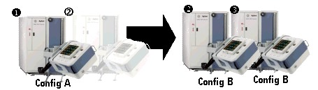

Pin-by-Pin for Pin Scale Digital Cards (SOC series only)
InstaPin is the name of an Advantest licensing concept. InstaPin offers floating system licenses for a pin-by-pin configuration which enables different speed and memory performance levels on a pin-by-pin basis for Pin Scale digital cards.
Dynamic performance scaling
The InstaPin licensing for Pin Scale digital cards allows you to dynamically scale the test system performance.
Each pin of a Pin Scale digital card can be scaled over its range of memory depth and speed. Plus, the per-pin software licenses can float between pins on a card, cards in a test system, test systems on a test floor, or even different production facilities.
The floating system licenses are not tied to a card or test system. You can use them wherever you need them. Because you do the reconfiguring by software, you Do not need to move hardware and you Do not need to re-calibrate.
Thus the InstaPin licensing scheme provides you with a performance library of licenses. InstaPin licensing is offered for SOC test systems only. For details see also Client Configuration and License Management in the user documentation.
License Scaling Example
The dynamic InstaPin license scaling for Advantest test systems enables different speed and memory performance levels for Pin Scale digital cards.
Imagine a test facility with two different devices and two different configurations (A and B). You just load the test programs for each device on the respective test systems.
If you need to adjust test resources, the test systems automatically configure themselves to fit the digital feature requirements of the device to be tested. Without down time, card moving, or re-calibrating.
InstaPin per-pin licenses are not tied to a specific digital card or test system, you can use them wherever they are needed, anywhere in the world.

Functional changes
- Introduced before SmarTest 6.3.2